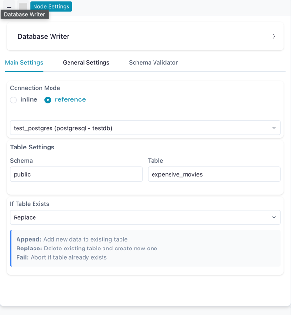
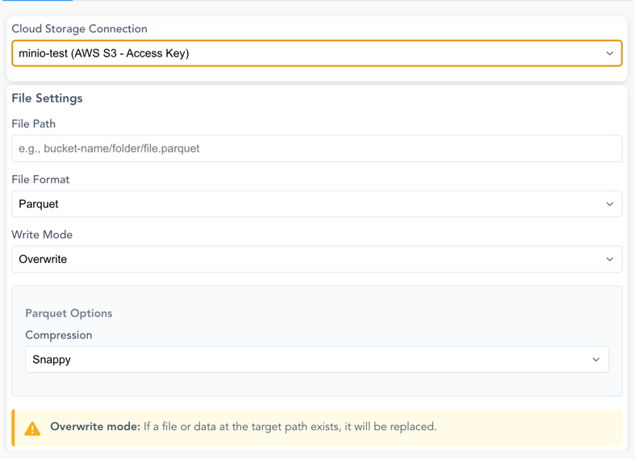

Output Operations
Output actions are where a flow's work lands: a file, a database table, cloud storage, a catalog table, an API response — or a chart you look at on screen. Most take an input and produce no output, so they sit at the end of a branch.
| Action | What it does | Lite |
|---|---|---|
| Write data | Save to a local CSV, Excel, Parquet, Arrow, NDJSON or Avro file | ● |
| Write to Database | Append to, replace, or create a database table | |
| Write to cloud provider | Write to S3, Azure Data Lake or Google Cloud Storage | |
| Write to Catalog | Register the result as a catalog table others can query | ● |
| Explore data | Build charts interactively on the node's input | ● |
| Flow Output | Named exit point when this flow runs inside another | |
| API response | Return this dataset as the body of an HTTP endpoint |
In Flowfile Lite
In the browser-only Flowfile Lite build, Write data downloads a file to your browser (CSV, Parquet or Excel — not the full desktop format set), and Write to Catalog and Explore data work as usual. Database and cloud writers need a backend, so they are not available.
Write data
Saves the incoming table to a local file.
Settings
| Setting | Description |
|---|---|
| File Path | Directory and filename for the output. |
| File Format | CSV, Excel, Parquet, IPC, NDJSON or Avro. |
| Write Mode | overwrite replaces the file; new file fails if one already exists. CSV also offers append. |
Format options
| Format | Extension | Compression | Write modes |
|---|---|---|---|
| CSV | .csv |
— (set Delimiter and Encoding instead) | overwrite, new file, append |
| Excel | .xlsx |
— (set Sheet Name, default Sheet1) |
overwrite, new file |
| Parquet | .parquet |
zstd (default), snappy, gzip, lz4, brotli, uncompressed |
overwrite, new file |
| Arrow IPC / Feather | .arrow |
uncompressed (default), lz4, zstd |
overwrite, new file |
| NDJSON | .ndjson |
uncompressed (default), gzip, zstd |
overwrite, new file |
| Avro | .avro |
uncompressed (default), snappy, deflate |
overwrite, new file |
CSV defaults to a , delimiter and UTF-8 encoding.
Write to Database
Writes the incoming table to a database table.
Connect to PostgreSQL is a step-by-step walkthrough.

Connection modes
| Mode | Description |
|---|---|
| Reference | Use a saved connection from the Connection Manager. Recommended. |
| Inline | Enter credentials directly in the node settings. |
Settings
| Setting | Description |
|---|---|
| Schema | Target schema, e.g. public. |
| Table | Target table name. |
| Write Mode | Append adds rows to the existing table, Replace drops and recreates it with the new data, Fail errors if the table already exists. |
Write to cloud provider
Writes directly to cloud object storage: AWS S3 (including S3-compatible services like MinIO), Azure Data Lake Storage, and Google Cloud Storage.
Authenticate with a saved cloud connection, or — for S3 only — with local AWS credentials from a CLI profile or environment variables.

Settings
| Setting | Description |
|---|---|
| File Path | Full URI including scheme, bucket or container, and file name, e.g. s3://bucket/folder/output.parquet. Browse picks a folder and names the file. |
| File Format | CSV, Parquet, JSON or Delta Lake. |
| Write Mode | overwrite replaces what is there; append is Delta Lake only. |
CSV adds Delimiter (default ,) and Encoding (UTF-8 or UTF-8 Lossy). Parquet adds Compression: Snappy (default), Gzip, Brotli, LZ4 or Zstd. Delta Lake supports both write modes and handles schema evolution automatically when appending.
Parquet defaults differ between the two writers
This node defaults Parquet to Snappy, while local Write data defaults to Zstd. Set the codec explicitly if the two paths need to match.
Overwrite replaces the target
In overwrite mode any existing file or data at the path is replaced. Verify the path before running.
Write to Catalog
Registers the result as a table in the Catalog, where colleagues can query, chart and schedule against it without rebuilding the flow.
Two modes sit behind tabs: physical, materialized as a Delta table on disk, and virtual, which stores no data and resolves on demand.
Settings
| Setting | Description |
|---|---|
| Table Name | Name for the catalog table. |
| Catalog / Schema | Target namespace in the catalog hierarchy. |
| Description | Optional description. |
Physical tables and write modes
A physical write materializes a Delta table with full schema metadata, row count and lineage.
| Mode | Description |
|---|---|
| Overwrite | Replace all existing data in the table. |
| Error if exists | Fail if the table already exists. |
| Append | Add rows to the existing table. |
| Upsert | Insert new rows, update existing ones matching the key columns. |
| Update | Update only existing rows matching the key columns; no inserts. |
| Delete | Remove target rows matching the key columns in the source. |
| SCD2 | Track history rather than overwriting it. See below. |
Key Columns are required for Upsert, Update, Delete and SCD2 — they are the columns rows are matched on.
SCD2: keeping history
The SCD2 write mode tracks row history instead of overwriting it. Each write adds four generated columns (sk, valid_from, valid_to, is_current), end-dates the rows whose tracked columns changed, and inserts the new versions alongside the unchanged ones.
| Setting | Description |
|---|---|
| Business key columns | The business key — the same underlying field as Key Columns, which the UI relabels for SCD2. Required. |
| Compare Columns | Columns checked for changes. Empty (the default) compares every column that is neither a key column nor one of the four generated columns. |
| Full Snapshot | Off by default. When on, business keys present in an earlier write but absent from the current input are end-dated as no longer current; when off, absent keys stay current. |
| Output | What passes downstream. Every choice emits the input's columns plus the four generated ones: All records that are inputted (default) returns the input rows with each one's current surrogate key, All changed records returns only the versions this run inserted or end-dated, and All active records returns the table's whole current slice. |
Unlike every other write mode, an SCD2 writer's output is not its input: it carries the four generated columns, so a downstream node can use the surrogate key of the version just written. The node only grows an output handle on the canvas while SCD2 is selected; in every other mode it stays an endpoint.
A table that is already SCD2-tracked accepts only further scd2 writes or a plain overwrite. An overwrite rebuilds the table and clears SCD2 tracking, while append, upsert, update and delete against an SCD2-tracked table fail at run time, since they would corrupt the version history. Writing scd2 onto an existing table that is not already tracked also fails — pick a new table name, or delete the existing table first.
Slowly Changing Dimensions covers the generated columns, change detection and reading history.
Virtual tables
The Virtual Table tab creates a virtual flow table — a catalog entry that stores no data on disk and resolves on demand by executing the producer flow. Selecting the tab checks whether the pipeline supports optimized resolution:
- Green checkmark — every upstream node is lazy, so the virtual table stores a serialized execution plan and resolves instantly with predicate and projection pushdown.
- Yellow warning — some upstream nodes are eager or conditional, so resolution re-executes the full producer flow on each read. The blocking nodes are listed.
Flow registration required
Virtual tables require the flow to be registered in the catalog. If it is not, the virtual write fails — open the flow from the catalog, or register it first.
Explore data
Opens an interactive drag-and-drop chart builder (powered by Graphic Walker) on the node's input. Drag columns onto the x and y axes, colour and size shelves to build bar, line, scatter and other charts — nothing to configure up front and no code. Chart configurations are saved with the node, so they survive reopening the flow.
It takes one input and produces no output: a terminal preview for eyeballing a dataset, not a step that transforms or writes anything. The builder shows an empty state until the upstream has run. There are no settings — the chart you compose is the configuration.
Visual editor only
Headless runs — the flowfile run flow CLI, the scheduler, and other non-UI paths — skip Explore data nodes automatically, since there is nowhere to draw the chart. It has no effect on the data flowing through the rest of the pipeline.
To keep a chart as a shareable, reusable artifact rather than an ad-hoc preview, use the catalog's visualizations.
Flow Output
A named exit point for a subflow. Each Flow Output exposes one dataset to the parent flow that calls it, appearing as an output handle on the parent's Run Flow node. A flow can carry several, each with its own name.
Settings
| Setting | Description |
|---|---|
| Output name | The port name the parent reads from. Default output. |
API response
Marks its input as the body of an HTTP endpoint. When a flow is published as an API, the data arriving here is serialized and returned to the caller; a published flow must contain exactly one. During interactive runs it passes data through unchanged, so previews keep working.
Settings
| Setting | Description |
|---|---|
| Orientation | records (a list of row objects, default) or columns (column-oriented). |
| Max rows | Optional cap on the number of rows returned. |
Serve Flows as APIs covers publishing, keys and parameters.